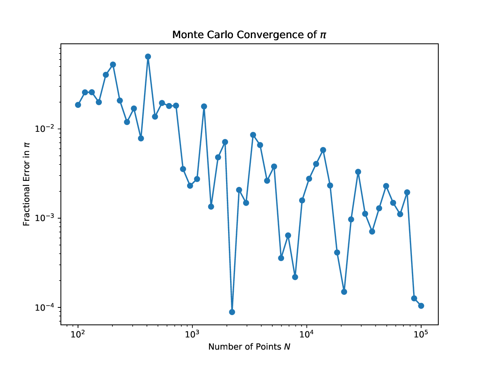

Monte Carlo Integration
Random sampling against a Riemann sum, and how fast each converges. 무작위 표본 추출과 리만 합을 비교하고, 각각의 수렴 속도를 확인했습니다.
Overview개요
PHYS 129L (scientific computing), Fall 2025. Two short programs. The first integrates $e^{-x^2}$ with a Riemann sum and with Monte Carlo sampling, and plots the fractional error of each against $N$. The second estimates $\pi$ from random points and plots how the error falls as $N$ grows.
Visual Analysis시각화 분석

Log-log plot showing the fractional error in estimating $\pi$ decreasing as the number of samples increases, confirming the $1/\sqrt{N}$ convergence rate. 샘플 수가 증가할수록 \(\pi\) 추정의 상대 오차가 감소함을 보이는 로그-로그 그래프이며, \(1/\sqrt{N}\) 수렴률을 확인합니다.
Source Code소스 코드
1. Monte Carlo Integration vs Riemann Sum (p4_hw9.py)
#!/usr/bin/env python3
import numpy as np
import matplotlib.pyplot as plt
KNOWN_VALUE = np.sqrt(np.pi)
LIMIT = 10.0
def riemann_sum(N):
dx = (2 * LIMIT) / N
x_rect = np.linspace(-LIMIT, LIMIT - dx, N)
y_rect = np.exp(-x_rect**2)
return dx * np.sum(y_rect)
def monte_carlo_simulation(N):
x_mc = np.random.uniform(-LIMIT, LIMIT, N)
return (2 * LIMIT) * np.mean(np.exp(-x_mc**2))
def main():
N_values = np.logspace(1, 6, 20, dtype=int)
rect_errors = []
mc_errors = []
for N in N_values:
#part a
rect_val = riemann_sum(N)
r_err = (rect_val - KNOWN_VALUE) / KNOWN_VALUE
rect_errors.append(abs(r_err))
#part b
mc_val = monte_carlo_simulation(N)
m_err = (mc_val - KNOWN_VALUE) / KNOWN_VALUE
mc_errors.append(abs(m_err))
#part a
plt.loglog(N_values, rect_errors,
color='blue', linestyle='none', marker='o',
label='Rectangle Method (Left Sum)')
plt.xlabel('Number of Rectangles (N)')
plt.ylabel('Fractional Error (Absolute)')
plt.title(r'Riemann Sum Error for $\int e^{-x^2} dx$')
plt.legend()
plt.savefig('p4_hw9_integration.eps')
plt.close()
#part b
plt.loglog(N_values, mc_errors,
color='red', linestyle='none', marker='s',
label='Monte Carlo Simulation')
plt.xlabel('Number of Random Points (N)')
plt.ylabel('Fractional Error (Absolute)')
plt.title(r'Monte Carlo Error for $\int e^{-x^2} dx$')
plt.legend()
plt.savefig('p4_hw9_monte_carlo.eps')
plt.close()
if __name__ == "__main__":
main()2. Pi Estimation Convergence (Monte_Carlo_Convergence_of_pi.py)
#!/usr/bin/env python3
import numpy as np
import matplotlib.pyplot as plt
N_min=100
N_max=100000
N_values = np.geomspace(N_min, N_max, num=50, dtype=int) #I can also use np.logspace but found out that np.geomspace is better
fractional_errors = []
for N in N_values:
points = np.random.uniform(0, 2, (N, 2))
dist_sq = np.sum((points- 1)**2, axis=1)
pi_est = 4 * np.mean(dist_sq <= 1)
error = np.abs(pi_est-np.pi) /np.pi
fractional_errors.append(error)
plt.figure(figsize=(8, 6))
plt.plot(N_values, fractional_errors, 'o-')
plt.xscale('log')
plt.yscale('log')
plt.xlabel('Number of Points $N$')
plt.ylabel('Fractional Error in $\pi$')
plt.title('Monte Carlo Convergence of $\pi$')
plt.savefig('Monte_Carlo_Convergence_of_pi.eps', format='eps')
plt.show()